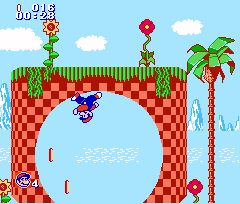
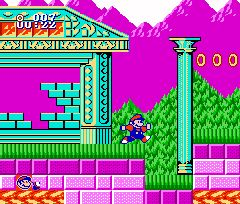
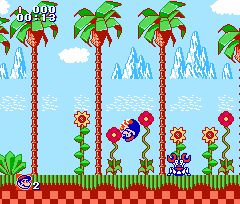

|


Review
Please note that this review is based on play of an emulated version
and may not accurately reflect the quality of the cartridge version.
Game Type: 2D Platform
A black-market NES port of Sonic the Hedgehog for Genesis, with Mario
as the main character. The basic gameplay is almost the same, though
there are some minor differences in control and level layout. As in
Sonic you run at high speed through loop-de-loops and other obstacles,
trying to reach the end of the stage and face off with Dr. Robotnik.
Although this game is based on the original Sonic, Somari also has the
spin-dash from Sonic 2.

Gameplay: 20/100
Well, the authors certainly tried. I am astounded that the NES could
duplicate Sonic this well, actually. The speed's been almost fully
retained, as have the cool obstacles like the loop-de-loop.
But it's still a far cry from the Genesis masterpiece. For one thing,
the authors got the physics all wrong. Somari can be going full-speed,
and yet he'll grind to a halt when he ascends even the smallest of hills.
He often gets caught in loop-de-loops, or falls into spike pits with no
way of getting out (or even of dying since he keeps catching the rings
he loses). This port doesn't reach the lofty aim of copying the
original's level of quality, and in the end doesn't measure up to other
NES games, either.
Graphics: 90/100
The gameplay may be a dismal failure, but the graphics are an
incredible triumph. Although the color pallette is a bit smaller the art
is otherwise a perfect duplicate of the Genesis version. Sonic's
simplistic look converts flawlessly to the NES. As for the character,
you're no doubt picturing a ridiculous scene - that fat little plumber
breaking the sound barrier. Don't worry, Mario's been redrawn to look
more lithe, and though he doesn't look as cool as Sonic it's still quite
an improvement. Graphically this one of the best - if not the
best - game in existence for the NES.
Sound: 40/100
Yes, they ported Sonic's syrupy-sweet and somewhat addictive tunes,
but they didn't do a very good job. Much of the original songs have
been cut out, leaving only a short and annoying loop. You'll be better
off playing without the audio.

Overall: 40/100
Even though these pirates obviously put countless hours of work
into this version, they still fell far short of the original. That's
testimony to what an incredible achievement Sonic the Hedgehog was.
Even this mediocre clone is damned impressive for a NES, but that
doesn't mean it's enjoyable. In fact, awed as I was by this game, I
couldn't bring myself to play past the second zone. That damnable
music and awkward gameplay were just too much for me.
I have no idea who the authors of this game were (and since this
is a case of blatant copyright infringement they probably prefer it
that way). It was undoubtedly one of the many rings of pirates
responsible for those 30+ game carts. As such this can probably only
be found in cartridge form in the Far East. If you do locate it on
cartridge, I would have to recommend purchase, as it must be
extremely rare. Be aware that it will only be of value as a
collector's item and as an example of the NES's capabilities, though.
This just ain't one you play for fun.
Emulation
Note: All rom requests will be ignored.
|